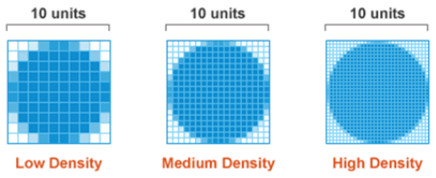
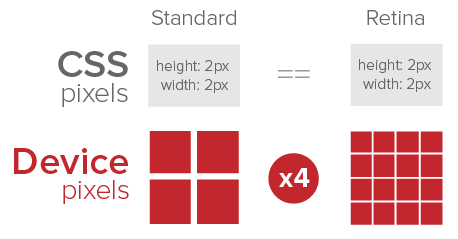

High Pixel Density Display Optimization
Общие сведения
High Pixel Density Display Optimization (ex. Retina display) - технология оптимизации графики web-страниц под дисплей с увеличенной плотностью пикселей.
Внесем ясность
Физические пиксели (device pixel или physical pixel) - самые маленькие элементы любого дисплея, каждый из которых имеет свой цвет и яркость.
CSS-пиксели (CSS pixels или device-independent pixels) - абстрактная величина, используемая браузерами для точного отображения контента на страницах, вне зависимости от размера и качества дисплей.
Плотность пикселей (Screen density) - это количество физических пикселей дисплея на один дюйм экрана (pixels per inch).
Коэффициент плотности пикселей (device-pixel-ratio) - это соотношение между разрешением экрана в физических пикселях и его размерами в CSS-пикселях.
device-pixel-ratio = physical pixels / dips
Например: для iPhone4 это 640х960 / 320х480 = 2
Retina display
На каждый CSS-пиксель в таких устройствах приходится 4 пикселя устройства, что позволяет делать изображение более четким.
Все производители мобильных устройств применяют схожую технологию увеличения четкости экранов, только коэффициент плотности пикселей у всех разный: от 1.3 до 3.
Поэтому заявленное в характеристиках мобильных устройств разрешения, как правило, не совпадает с реальным размером экрана в CSS-пикселях.
| реальный размер экрана в CSS пикселях | название устройства | заявленное разрешение |
|---|---|---|
| 320x480 | iPhone 4 | 640x960 |
Реализация
HTML
<table class="table">
<tr>
<th>реальный размер экрана в CSS пикселях </th>
<th>название устройства</th>
<th>заявленное разрешение</th>
</tr>
<tr>
<td>320x480</td>
<td>iPhone 4</td>
<td>640x960</td>
</tr>
</table>
CSS
2x
@media (-webkit-min-device-pixel-ratio: 2), (min-resolution: 192dpi) {
/* Retina-specific stuff here */
}
3x
@media (-webkit-min-device-pixel-ratio: 3), (min-resolution: 350dpi) {
/* Retina-specific stuff here */
}
.social {
background: url('../../images/social.png') no-repeat 0 0;
width: 103px;
height: 103px;
}
@media (-webkit-min-device-pixel-ratio: 2), (min-resolution: 192dpi) {
.social {
background: url('../../images/social-@2x.png') no-repeat 0 0;
background-size: 455px 333px;
}
}